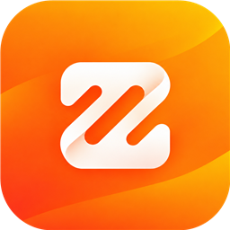
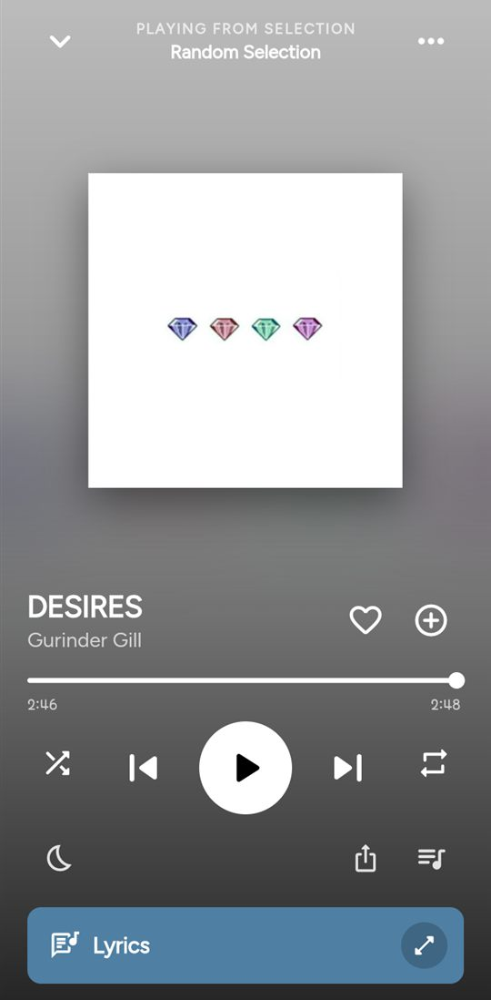
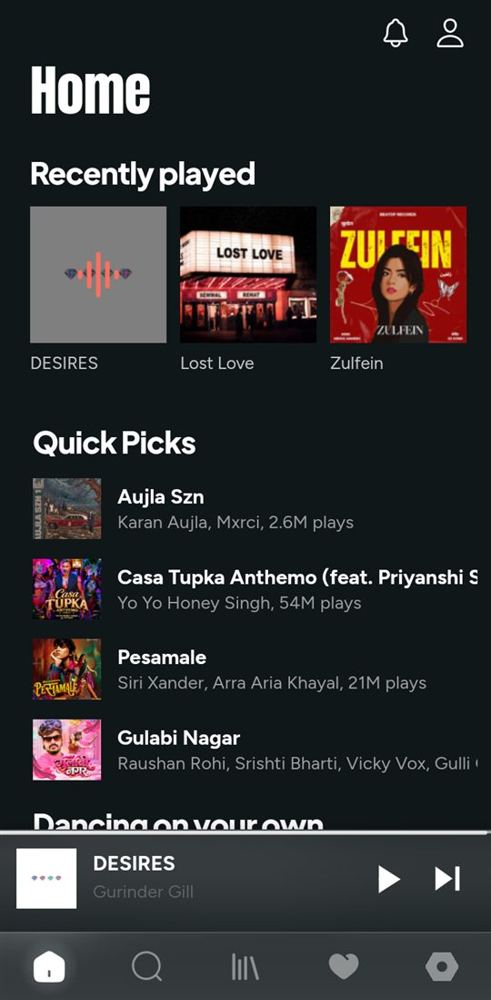

Zuno v2.0
Music, without
the noise.
Stream anything, download anywhere, sing along with synced lyrics. Free, with no ads.
Smaller Android file for most phones: arm64 APK
🔑
Login required. Get the demo login from my Instagram story.
Made by ❤️ Rajan

